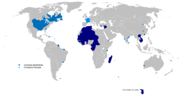

De: La Frikipedia, la enciclopedia extremadamente seria.
De: La Frikipedia, la enciclopedia extremadamente seria. De: La Frikipedia, la enciclopedia extremadamente seria.
| De la serie imperios antiguos: | |||||
| Imperial Francaise Democratique | |||||
| |||||
| Lema: ¡Somos la hostia en vinagre! | |||||
| Himno: Estoy casado y tengo amante
| |||||
| 
| |||||
| Capital(es) | París | ||||
| Mayor ciudad | Le Mans, Barcelona | ||||
| Lenguas oficiales | Francés (en todos sus significados...) | ||||
| Religión oficial | La que se la antoje a la Burguesía | ||||
| Gobierno | República Totalitaria | ||||
| Real Presidente | Napoleón Sarkozy | ||||
| Fecha de fundación | En el año 1500 D.C | ||||
| Caída | En la Primera Guerra Mundial | ||||
| Edad de oro | En la era de los amanerados | ||||
| Periodo de Estancamiento o reseción | En la Guerra de los Cien Años | ||||
| Máxima Extensión | El Mundo | ||||
| Forma de economía | Todo el dinero es para la clase noble, reyes, empresarios y nazis | ||||
| Estados que se despacho | Norteamérica, África y Asia | ||||
| Población calculada | 100000000 Inútiles y 10 Soldados | ||||
| Moneda | Er Franco (en serio) | ||||
| Zona horaria | Zona Cero | ||||
| Legado(s) | Véase la Guarripeda | ||||
| ¿Por que se vino abajo? | Por culpa del Imperio Británico, Napoleón y Hitler | ||||
| | |||||
«Libertad!!!»
~ Moros contra el Imperio Francés
«¡¡¡Sexo gratis!!!»
~ Ejercito francés en cada batalla contra sus enemigos
Llamamos Imperio Francés a lo que antes eran posesiones del lobby empresario franchute conocido como "República Francesa" y sus intervalos en los cuales fue dictadura napoleónica francesa.
Francia nació cuando todos los castrexos del norte de Hespaña emigraron más allá de los Pirineos y comenzaron a olvidarse de sus costumbres nativas relajándose un poco al entrar en contacto con la Grecia Clásica y los romanos.
Debido a estos contactos contrajeron sífilis y gonorrea y murieron muchos. Mientras tanto, los romanos aprovecharon y les invadieron, pasando a formar los galos (excepto los de Bretaña, la aldea de Obélix) parte del Imperio Romano.
Tras la conversión de todos al cristianismo, el Imperio Romano se durmió en los laureles y les porculizaron los pueblos Germánicos, quienes acabaron con el sistema de bienestar y privatizaron todo.
Tras décadas de guerras civiles entre francos, burgundios, alamanes, romanos, celtas y galos consiguieron unificarse bajo el reinado de la Dinastía Cateta (todos descendientes de Jesús según Iker Jiménez). Gracias a ello no sufrieron la traición de ningún general africano (como le pasó a los visigordos y la Segunda República Española) y no se convirtieron al Islam. Después nació Carlomoñas que estableció la primera colonia francesa fuera de Francia, Cataluña.
Siglos más tarde Francia se embarcó en la Guerra de los Cien Años para que Inglaterra le devolviese unas tierras al rey. Como los anglosajones no querían, se liaron a tortazos. Iban ganando los ingleses cuando llegó Santa Juana de Arco que los empapeló de vuelta pa Gran Bretaña y dio un golpe de estado. Desde entonces la Dinastía Borbónica rigió los destinos de Francia.
Por algunos motivos que el CNI no quiere revelar el rey de España, primo del rey de Francia, le declaró la guerra al rey de Francia, pero en vez de pelearse los dos solos enviaron a miles de campesinos a luchar por ellos. Los españoles en los Tercios de Flanders y los franceses en bicicletas.
Como siempre ganaban los españoles, el gobern franchés envió un ejército de putas y borrachines, que en dos meses destruyó a los tercios españoles gracias a la guerra química (virus y bacterias de ETS y el alcoholismo).
Como en Francia solo pagaban los impuestos los que curraban, éstos fueron a protestar al Louvre, pero allí María Antonieta los masacró enviando a los tres mosqueteros contra el pueblo. Por eso los campesinos se organizaron en soviets y gracias a los soldados y mosqueteros veteranos jubilados dieron un golpe de estado, derrocaron la monarquía, proclamaron la libertad, igualdad y fraternidad del hombre al mismo tiempo que se cargaron a sus reyes y nobles (por parásitos) e hicieron una república, que como no, sería traicionada por un general, Napoleón Bonaparte, que para que los gabachos no le jodiesen a él envió a los soviets a conquistar el mundo. Sin embargo cuando llegaron a España los campesinos con sus borricos les metieron tal andanada de ostias que destruyeron el imperio napoleónico.
Pues como el Asia, porque ya se sabe que en esos sitios son más tolerantes con los pervertidos sexuales, y comenzaron a invadir tierras por aquí y allá sin mucho sentido. En otros lugares no invadían manu militare y pero si ponían tenderetes con mujeres practicando francés y esto hizo que muchos caciques y reyezuelos orientales les acabasen cediendo partes del país, minas, trenes, servicio de correos, bancos... Así poco a poco y como quien no quiere la cosa acabaron teniendo su propio imperio, eso sí, nada glorioso.
Como veían que sus esposas al hacerse viejas ya no eran tan lindas comenzaron a irse pa América a ver si cazaban alguna playmate del Playboy, así que invadieron América del Norte. Allí se volvieron encontrar con los ingleses y los vikingos, pero como los franceses eran más de andar follando pues acabaron haciéndose amigos de los indios mohicanos, a los cuales usaron para que atacasen ellos a los ingleses y así fundaron Canadá, donde trabajaban los indios pero mandaban los franceses.
Luego tuvieron unos problemillas con unos comunistas en Nueva York que acabaron fundando el Imperio Yanqui, pero enseguida se hicieron amigos y hasta los yanquis les fueron a sacar al enemigo de casa una vez durante la Primera y Segunda Guerra Mundial.
Todo se fue al carajo cuando los colonizados se cansaron de tanta tontería y se alzaron en armas contra los gabachos al ver que estos no habían sido masacrados por Alemania en la Primera Guerra Mundial.
El principal líder de la rebelión fue Jordi Pujol y su lema El francés solo es bueno pa putas y maricones y su uso masivo de balas de algodón y lino. El ejemplo cundió en otras colonias de Francia.
Sin embargo los nativos no consiguieron hacer retroceder a los imperialistas hasta que estalló una bomba nuclear en Muroroa. La polución se cargó la capa de ozono e hizo que muchos de los franceses murieran por exceso de sol, a pesar de que todos llevasen pantalones blancos.
Se calcula que el Imperio Gabachés se extendía por todo el mundo (menos América del Sur), aprovechándose de pequeños caciques africanos y asiáticos los cuales les dieron el poder a cambio de unas subvenciones y quedar en el puesto de gobernante títere.
Autor(es):